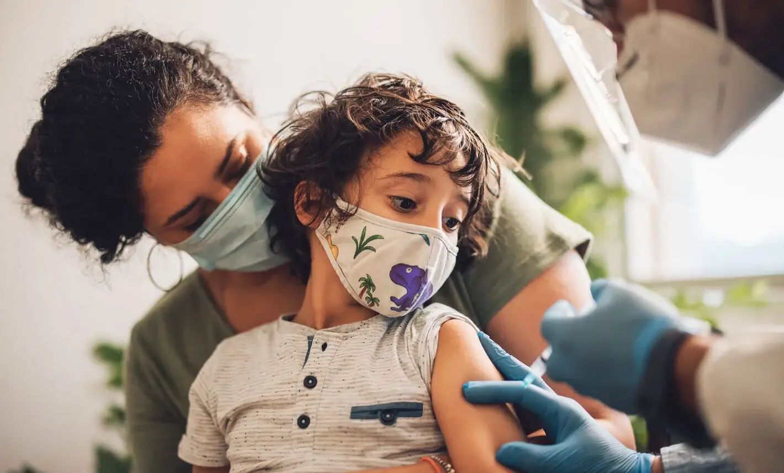

Inmunización
Las Vacunas son el método mas seguro que hay en el mundo para proteger a los niños de enfermedades mortales
Las vacunas constituyen uno de los avances más importantes en materia de salud y desarrollo a nivel mundial. Durante más de dos siglos, las vacunas han reducido de manera segura el flagelo de enfermedades como la poliomielitis, el sarampión y la viruela, y han ayudado a los niños a crecer sanos y felices. Las vacunas salvan más de cinco vidas cada minuto, de modo que, ya antes de la llegada de la COVID-19, han evitado hasta tres millones de muertes al año.
